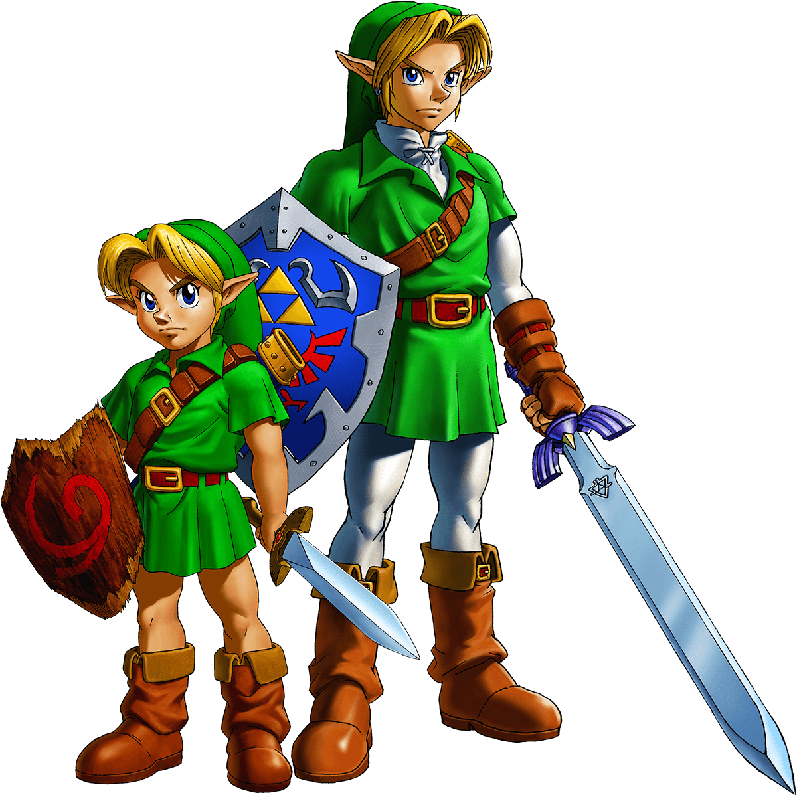
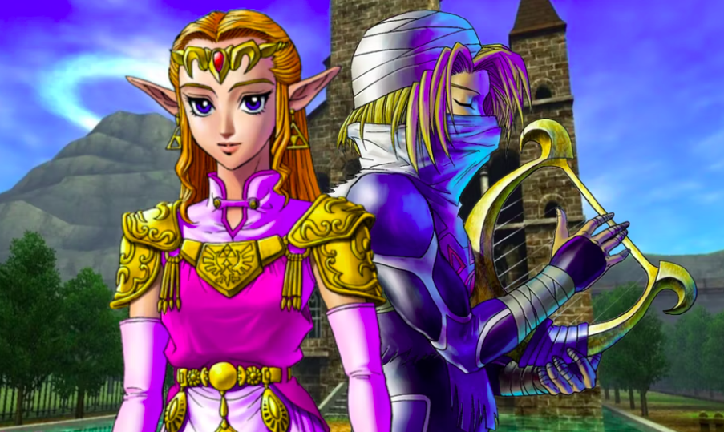
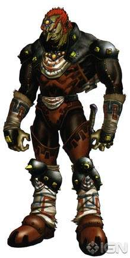
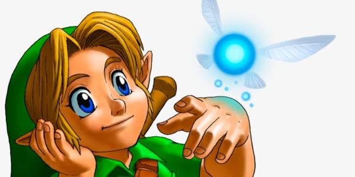
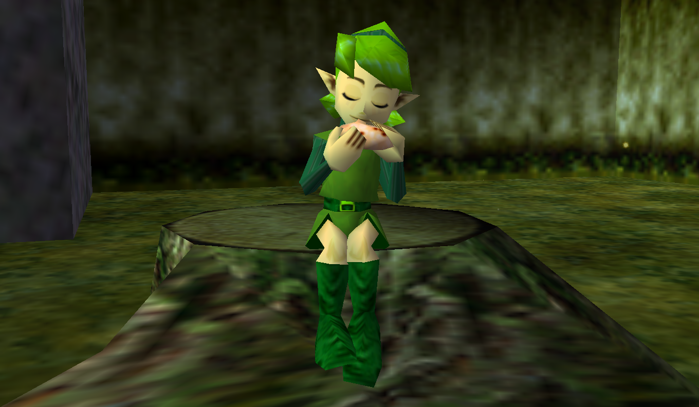
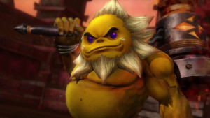
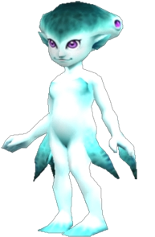
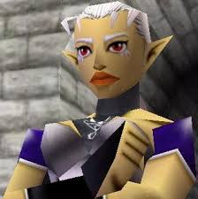
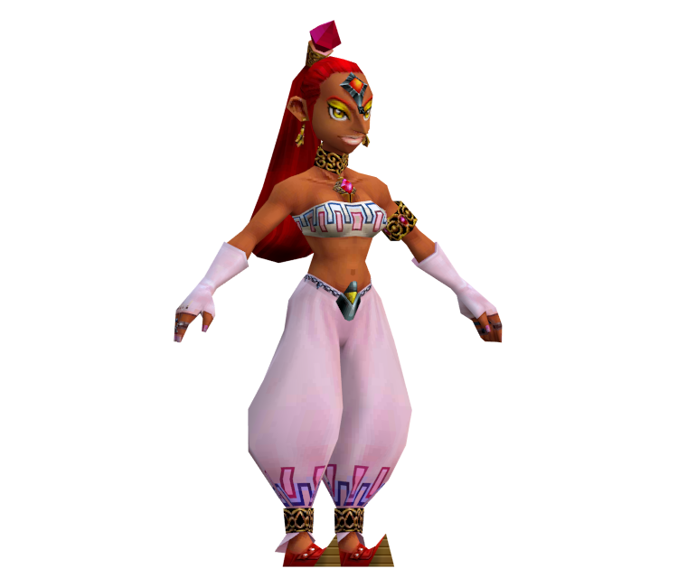

Personajes de The Legend of Zelda: Ocarina of Time

Link (El héroe del tiempo)
- Descripción: Link es el protagonista de Ocarina of Time, un joven huérfano criado entre los Kokiri en el Bosque Kokiri. Es elegido por el destino para ser el Héroe del Tiempo y salvar Hyrule.
- Características:
- Valiente y decidido: Aunque es un niño al principio del juego, demuestra una increíble valentía y fortaleza mental en su misión de salvar el reino.
- Silencioso: Como en la mayoría de los juegos de Zelda, Link no habla, lo que lo convierte en un "héroe silencioso". Sus acciones y expresiones transmiten sus emociones.
- Hábil con armas: Durante su viaje, se convierte en un maestro de varias armas, como la Espada Maestra, el arco, el bumerán, y muchas otras herramientas.

Princesa Zelda / Sheik
- Descripción: Zelda es la princesa de Hyrule y una figura central en la lucha contra Ganondorf. Después de que Ganondorf toma el control del reino, adopta la identidad secreta de Sheik para guiar a Link y protegerse.
- Características:
- Inteligente y estratégica: Desde una edad temprana, Zelda se da cuenta de las intenciones malvadas de Ganondorf y crea un plan para detenerlo, enviando a Link en su misión.
- Sheik: Como Sheik, demuestra agilidad, habilidad para el combate y conocimientos sobre los sabios y el destino de Link. Este alter ego enmascara su identidad real mientras ayuda a Link a través del tiempo.
- Compasiva: Aunque es fuerte y determinada, Zelda también muestra empatía y un profundo deseo de proteger a su pueblo.

Ganondorf (El rey del mal)
- Descripción: Ganondorf es el principal antagonista de Ocarina of Time, el líder de los Gerudo que busca obtener el poder de la Trifuerza para gobernar Hyrule.
- Características:
- Ambicioso y despiadado: Está dispuesto a destruir y someter a todo el reino para satisfacer su deseo de poder.
- Mago poderoso: Ganondorf no solo es un maestro del combate, sino también un hábil hechicero, capaz de usar magia oscura y manipular a otros para cumplir sus fines.
- Astuto y manipulador: Engaña a los gobernantes de Hyrule para ganarse su confianza mientras planea apoderarse del reino.

Navi (El hada)
- Descripción: Navi es el hada guardiana de Link, enviada por el Árbol Deku para guiarlo en su misión de salvar Hyrule.
- Características:
- Guía fiel: Navi acompaña a Link durante toda su aventura, proporcionándole consejos y ayudándole a encontrar su camino.
- Curiosa y diligente: A menudo se le escucha exclamando "¡Hey!" o "¡Escucha!" para captar la atención de Link, especialmente cuando hay información importante.
- Leal: A pesar de las dificultades, Navi nunca abandona a Link y permanece a su lado hasta el final.

Saria (Sabia del Bosque)
- Descripción: Saria es una de las mejores amigas de Link en el Bosque Kokiri y es revelada más adelante como la Sabia del Bosque.
- Características:
- Amistosa y bondadosa: Saria es extremadamente cariñosa y tiene un vínculo especial con Link. Ella le enseña la Canción de Saria, un tema que simboliza su profunda amistad.
- Guía espiritual: A pesar de su aparente juventud, Saria se convierte en una figura sabia y espiritual, cuyo papel es ayudar a Link en su misión al convertirse en una de los Sabios.

Darunia (Sabio del Fuego)
- Descripción: Darunia es el líder de los Gorons, una raza de criaturas rocosas que habitan la Montaña de la Muerte. Se convierte en el Sabio del Fuego.
- Características:
- Valiente: Darunia es fuerte y tiene un gran sentido de la justicia. A pesar de su apariencia robusta, también es alegre y no duda en proclamar a Link como su "hermano".
- Leal: Aunque es un líder feroz, Darunia se muestra leal a sus amigos y su pueblo, y está dispuesto a sacrificarse para ayudar a Link a derrotar a Ganondorf.

Ruto (Sabia del Agua)
- Descripción: Ruto es la princesa de los Zora, una raza acuática que vive en el Dominio Zora. Más adelante, se revela como la Sabia del Agua.
- Características:
- Segura de sí misma y decidida: Ruto es decidida y, a menudo, testaruda, pero muestra una evolución a lo largo del juego, pasando de ser una joven arrogante a una sabia figura espiritual.
- Silencioso: Como en la mayoría de los juegos de Zelda, Link no habla, lo que lo convierte en un "héroe silencioso". Sus acciones y expresiones transmiten sus emociones.
- Vínculo con Link: En su juventud, Ruto llega a desarrollar sentimientos románticos hacia Link, prometiéndole que algún día se casará con él, aunque esto queda en segundo plano conforme avanza la historia.

Impa (Sabia de la Sombra)
- Descripción: Impa es la protectora de la princesa Zelda y miembro de la tribu Sheikah, un grupo que sirve a la familia real de Hyrule. Eventualmente, se convierte en la Sabia de la Sombra.
- Características:
- Guardián protector: Impa es ferozmente leal a Zelda y está dispuesta a hacer todo lo que sea necesario para protegerla.
- Sabia y poderosa: Como miembro de los Sheikah, Impa es una combatiente extremadamente hábil y conoce muchos secretos sobre Hyrule y la Trifuerza.

Nabooru (Sabia del Espíritu)
- Descripción: Nabooru es una Gerudo rebelde que se opone a Ganondorf y su tiranía. Más tarde, se revela como la Sabia del Espíritu.
- Características:
- Rebelde y honorable: A pesar de ser una Gerudo, Nabooru no apoya a Ganondorf y está dispuesta a luchar contra su tiranía. Tiene un fuerte sentido del honor y la justicia.
- Independiente: Nabooru actúa de manera autónoma y tiene una fuerte voluntad, lo que la lleva a actuar contra Ganondorf por el bien de su pueblo.